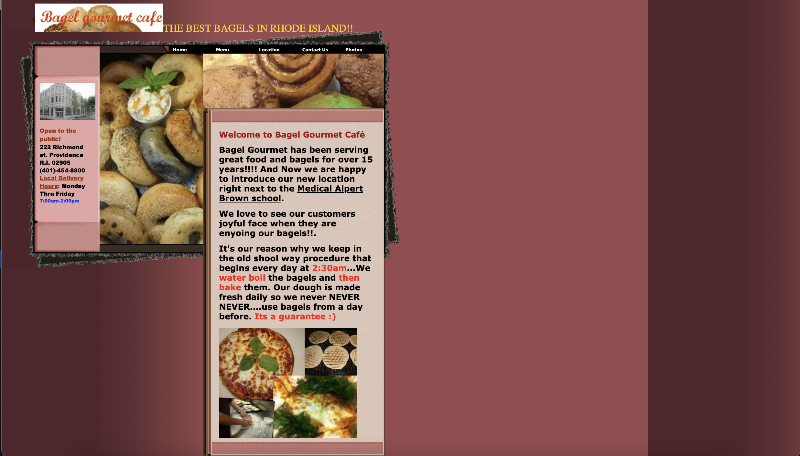
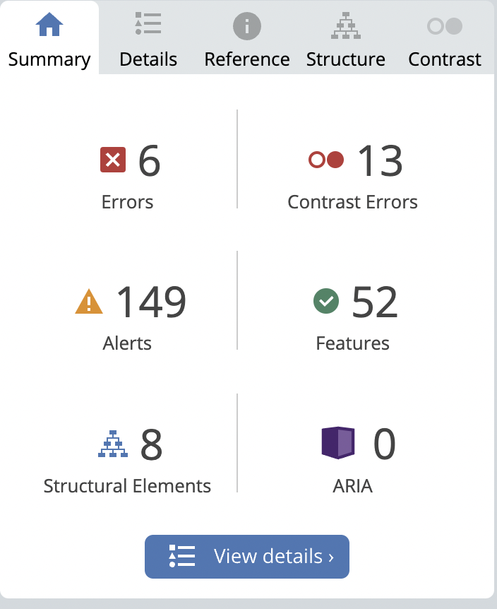
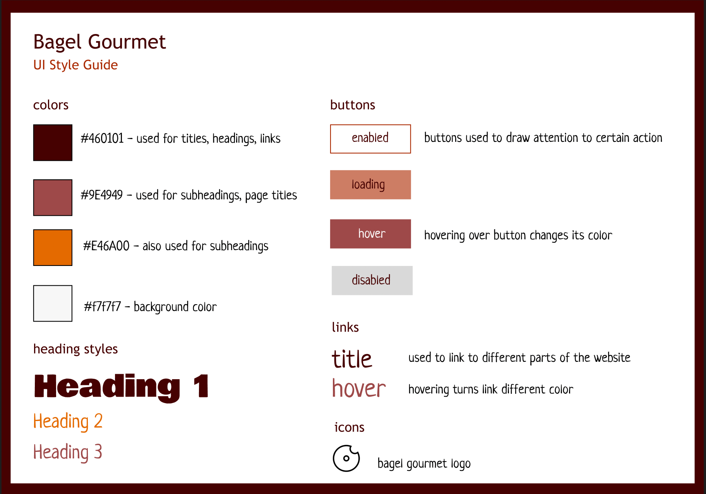
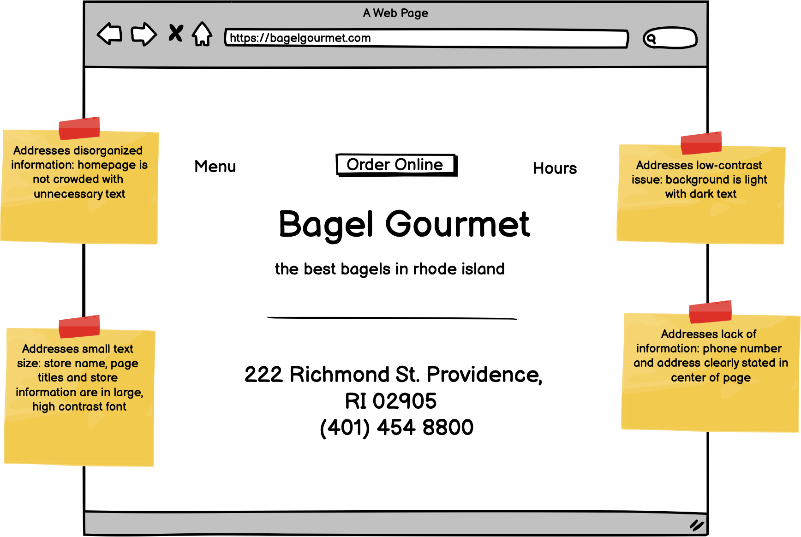
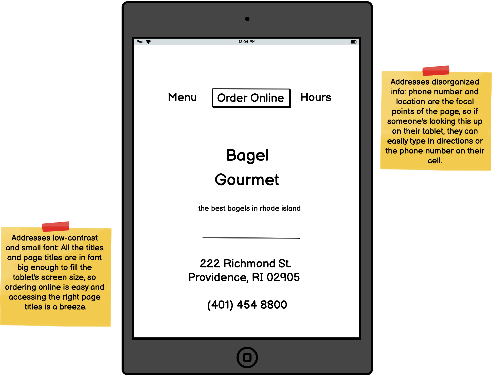
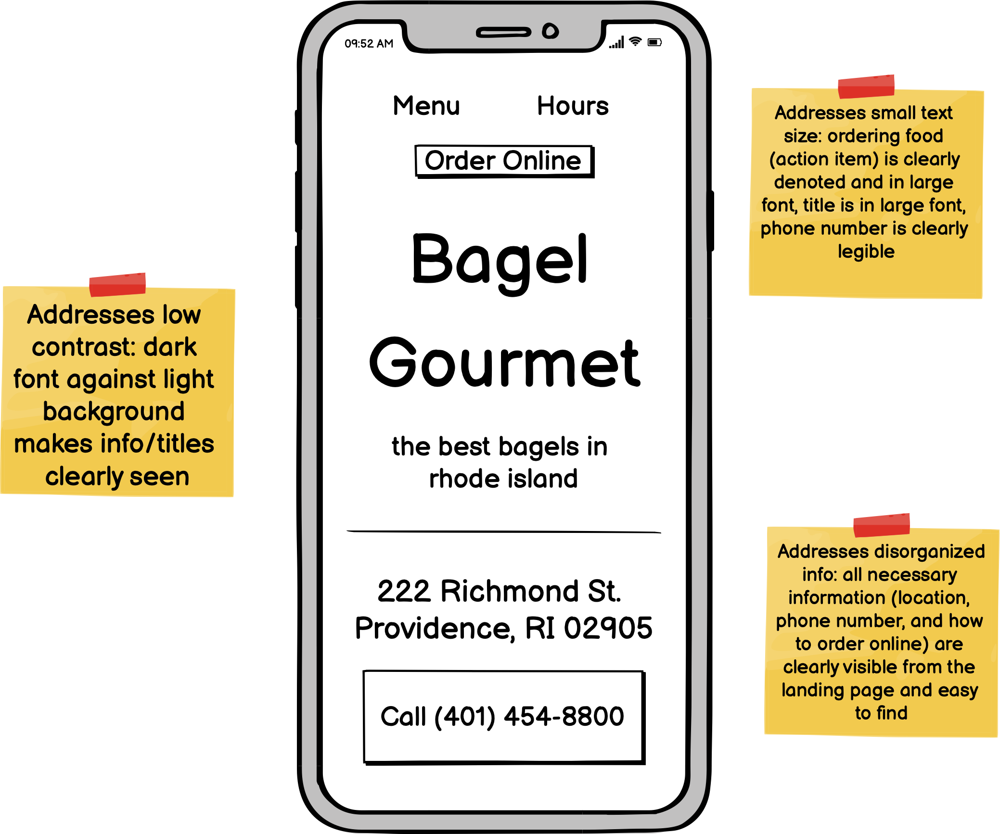
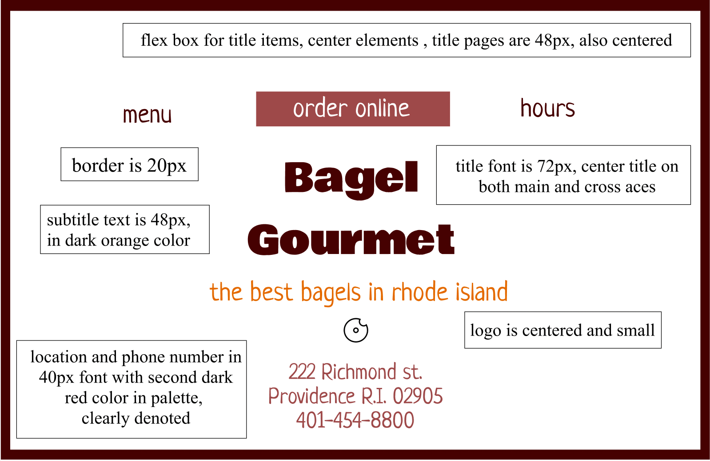
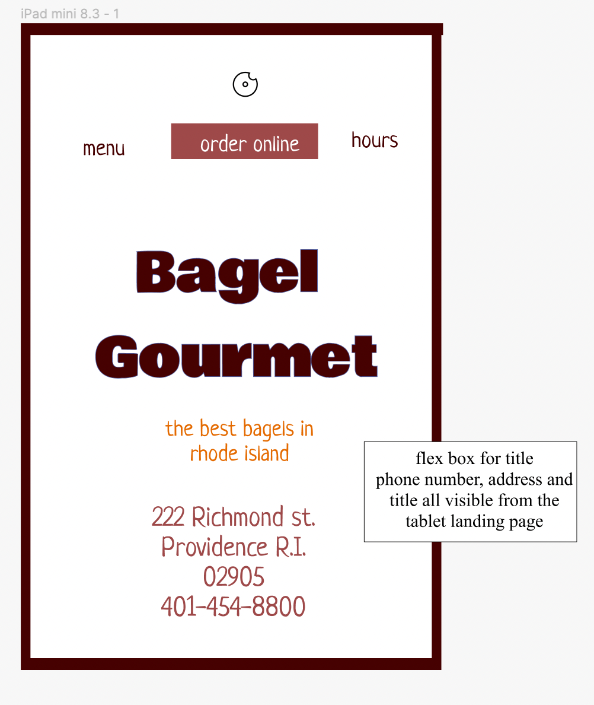
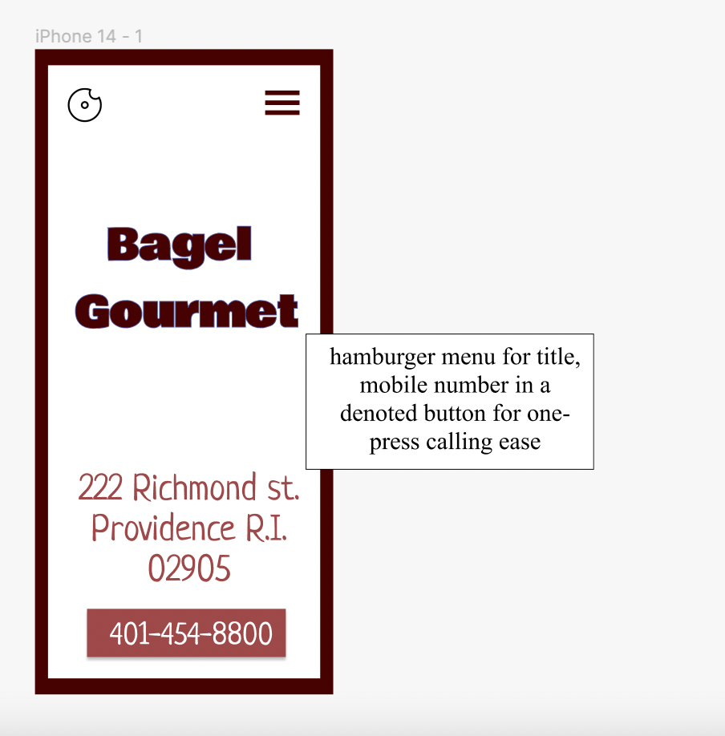

Analyzing a website's accessibility issues to design a more responsive and user-friendly alternative
what is this?
By creating lo-fi and hi-fi prototypes for various screen sizes, I redesigned and rebuilt an existing webpage to make it easier to use and more responsive. I first chose a website that I felt could benefit from some reworking, built prototypes to address the flaws I idenfitied, and then built a new website from scratch that was also better suited to adapt to different screen sizes.
why is it important?
It’s easy to tell when a website looks bad, but much harder to know how to fix it. After this assignment, I feel better equip to identify and analyze flaws in an existing website, particularly relating to accessibility. Not only can I now tell what makes a website hard to use or look at, but I also have practiced how to make it better.
the original website
It’s evident that this website was not created with accessibility in mind. Immediately, the user is bombarded with information from several different locations. There is no clear hierarchy to information and navigation. Text is in different colors and emphasized in red text for no apparent reason. The photos uses are also pretty unappetizing — one of the bagels is literally grey.

first, let's identify key usability issues.
small text
1) text throughout the website, particularly in the navigation bar, is extremely small and hard to read
2) title text is indistinguishable from body text
3) logo text is tucked away in the corner
disorganized info
1) key information such as location, hours, and how to order online is scattered in disparate blocks of text
2) redundant information, such as a location tab and a listed location in the left column
3) information that is not important is highlighted in red, adding confusion
low-contrast elements
1) a dark background against similarly colored text makes it hard to read
2) text is not high contrast, an issue exacerbated by the small text size
3) dark color theme generally makes the site unpleasant to use and look at
analyzing accessibility with the WebAIM WAVE test
I thought the WebAIM WAVE program detected all the issues I initially found with the website, and more – with 13 contrast errors and 109 small text errors, it’s clear this website could benefit from some reworking. I also found the website's text to be low contrast and disorganized, which are just a few of the problems the test detected. I was surprised, however, by the extent of the issues. Though I certainly found this website hard to use, the test helped me recognize how harmful these qualities would be for someone who is colorblind or who might struggle to read small text without glasses.

now, let's draw up some prototypes.
visual style guide
Drawing inspiration and color themes from the original website, the new style guide streamlines fonts, headings and other design decisions to create a more cohesive palate.

visual style guide
Drawing inspiration and color themes from the original website, the new style guide streamlines fonts, headings and other design decisions to create a more cohesive palate.
lo-fi prototypes
This lo-fi protoype sketches out the desktop design, which features a clear title, a nav-bar for easy navigation, and the store's contact information front and center. With takeout-centered restaurants like a bagel shop, having contact information for easy ordering is key.

tablet lo-fi prototypes

mobile lo-fi prototypes

hi-fi prototypes
These hi-fi protoypes, drawn with Figma, visualize the final design choices using the style guide and the lo-fi prototypes.

tablet lo-fi prototypes

mobile lo-fi prototypes

the redesigned site
And finally, the redesigned website, responsiveness and all.